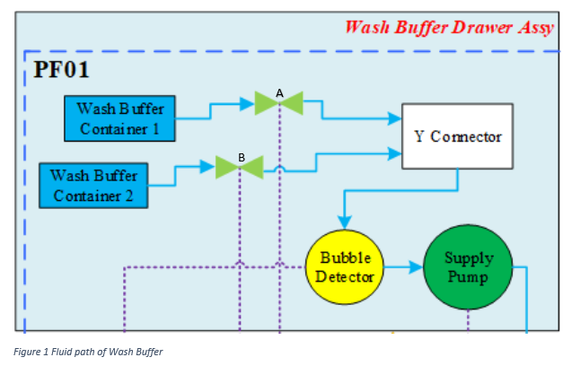

Wash Buffer Level Detection
This topic includes information about wash buffer level detection.
| Table of Contents |
|---|
| Summary |
| Wash Buffer Level Detection Operation |
| Wash Buffer Fluidics Drawer |
Summary
The test count and inline bubble detector determine if fluid, or air is present in the fluidic line. This principle is true for wash buffer level detection. The test count is the wash buffer that is dispensed for an action.
Wash Buffer Level Detection Operation

-
A siphon tube is inserted into the wash buffer cube containers. The tube is connected to a valve then a "Y" connector before passing through an optical sensor. The optical sensor is used as a bubble detector and is connected to a supply pump, refer to Figure 1.
-
The valves in Figure 1 are represented by green triangles A and B. The valves determine which wash buffer container will be used. The valves work together, if one is open the other is closed.
-
The bubble detector is an optical sensor that detects if fluid or air is in the line.
-
The valve to the wash buffer container remains open when the supply pump activately draws fluid through the line. The line passes through the bubble detector. When the bubble detector senses air in the line the system will mark the container empty.
-
The valve to the container will close and the valve to the other container will open.
-
Fluid will be drawn from the container with the open valve.
-
There is an optical sensor in the wash buffer fluidics drawer. It is triggered when the drawer is closed.
-
The triggered optical sensor causes the supply pump to turn on and draw fluid from the containers.
-
The container selector valve will open and close. This switchs the flow of fluid from the empty container to the full container.
-
When the bubble detector senses a transition state it will update the displayed value of the containers on the consumable screen.
Note:For Example:
Two wash buffer containers are in the wash buffer fluidics drawer. One is empty and the other is full. The user interface (UI) displays the full container in front and the empty in rear. The user opens the wash buffer fluidics drawer to remove empty container, replace with new and close drawer. The fluid is drawn from both containers. The fluid from the rear container causes the bubble detector to transition from air to fluid. The UI is updated from Empty to 100%.
-
If no transition is detected by the optical sensor then the UI will not be updated. The system does not recognize the change made by the user.
Note:For Example:
The UI displays two wash buffer containers. One container is at 100% and the other at 20%. The user opens the wash buffer fluidics drawer and replaces the container at 20% with a full container. No transition was detected by the bubble detector . The display on the UI will continue to display 20% for the new container.
Wash Buffer Fluidics Drawer
-
The wash buffer containers are stored in a drawer with an optical sensor. This sensor determines if the drawer is open or closed. The optical sensor is triggered when the drawer closes. This will cause the supply pump to turn on and draw fluid from a contianer.
-
The container selector valves will open and close.